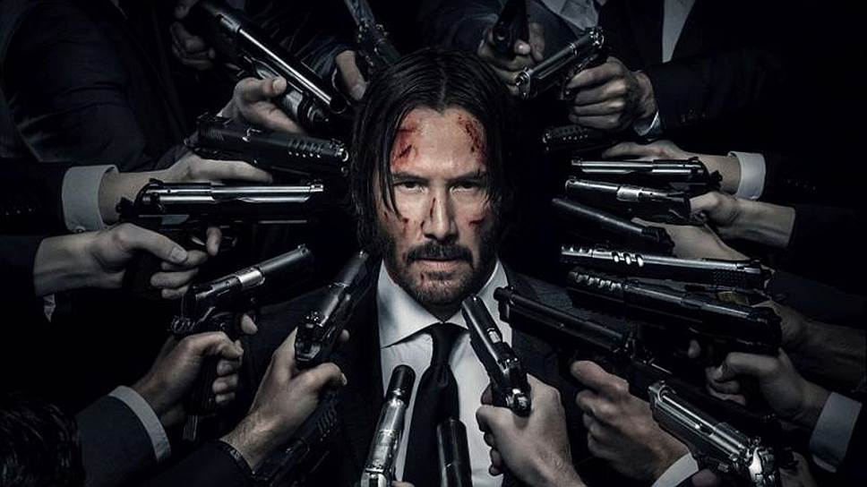

АНИМАЦИЯ – то же, что мультипликация - оживление картинок. Оживить картинку можно с помощью магического заклинания, либо в результате долгого и кропотливого труда художников-аниматоров. В современном кинематографе чаще используется второй вариант.
АРТ-ХАУС – фильм для самых вумных, продвинутых зрителей. Слово происходит от названия кинотеатров, демонстрировавших фильмы для подготовленной публики.
БЛОКБАСТЕР – фильм с бюджетом, сопоставимым с национальным доходом некоторых государств. По идее, Б. должен производить эффект взорвавшейся бомбы (англ. blockbuster - мощная бомба).
БОЕВИК – любой фильм с резкими поворотами сюжета. Согласитесь, довольно трудно повернуть сюжет без помощи оружия. Поэтому все боевики пахнут кровью и порохом.

ВЕСТЕРН Фильм про геноцид индейского народа.
ВОСЬМЕРКА – (крест, паркет) стандартный способ съемки диалога в кино. Состоит из последовательности кадров, снятых через плечо или реверсом. Сленговое название происходит от расположения камеры, которая, находясь у одного героя за правым плечом, а у другого - за левым, вынуждена перелетать по такой траектории.
ГЭГ – киношная шутка без слов. Характерный пример гэга - падающая на голову тумбочка с тухлыми яйцами.
ДЕТЕКТИВ – фильм про одного маленького, старенького, но очень умного и храброго джигита, выводящего на чистую воду коварного злодея или группу таковых.
ДОРАМА – название азиатских (изначально японских) сериалов.
ЖУРАВЛЬ — это такая длинная палка с микрофоном, постоянно норовящая попасть в кадр. Американские киношники называют ее boom mike - Буманутый Майк.
КАМЕО — эпизодическая роль знаменитости. Ярчайший пример - появление Якубовича, играющего самого себя, в комедийном боевике «Брат-2». Как правило, такие роли не указываются в титрах и расцениваются как режиссерские шалости.
МЕЛОДРАМА — в идеальном варианте - интригующее кино о взаимоотношениях положительного героя и страдающей героини, противопоставленных злому року.
НАЕЗД – движение распальцованной камеры к объекту.
ПРИКВЕЛ – кинокартина, снятая в результате осознанной коммерческой необходимости как вольная предыстория успешного фильма.
РЕВЕРС — план, в котором показан персонаж, смотрящий на объект, находящийся за экраном. Например, когда героиня смотрит на картину, но сама картина не видна, т.е. будет показана следующим планом. При склейке реверс-планов складывается впечатление, что героиня и картина смотрят друг на друга.
СИКВЕЛ — Кинокартина, снятая в результате осознанной коммерческой необходимости как вольное продолжение успешного фильма.
ТРИЛЛЕР — фильм с развитием сюжета в сторону убийства, катастрофы или иной крупной неприятности. Противоположен детективу. В быту слово стало слишком общим, объединяющим в себе фильмы-катастрофы, хоррор и просто остросюжетные картины.
ФИЛЬМ-КАТАСТРОФА – история о глобальном катаклизме, изобилующая убедительными спецэффектами.
ХРОМАКЕЙ – цветовая рирпроекция, фон для киносъёмок. Актеры снимаются на каком-либо фоне, затем вместо фона накладывается антураж.
ЭКСПОЗИЦИЯ — (прием) объяснение малограмотному зрителю, что такое «крутящий момент на валу электродвигателя» или «корпускулярно-волновая теория» посредством реплик персонажей, подготовка к пониманию сути происходящего.